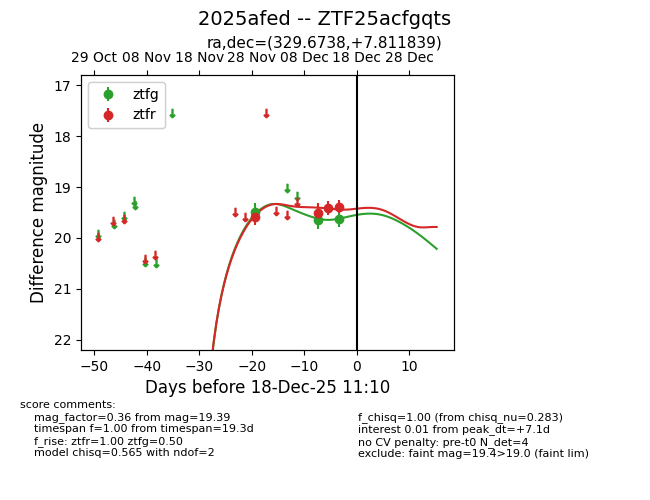
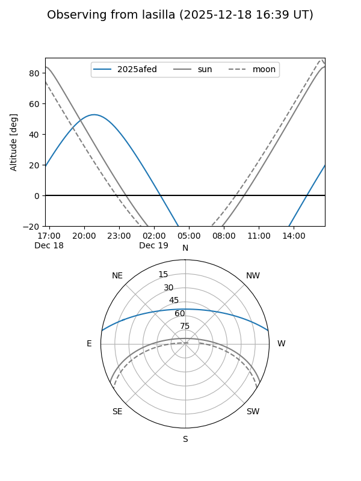
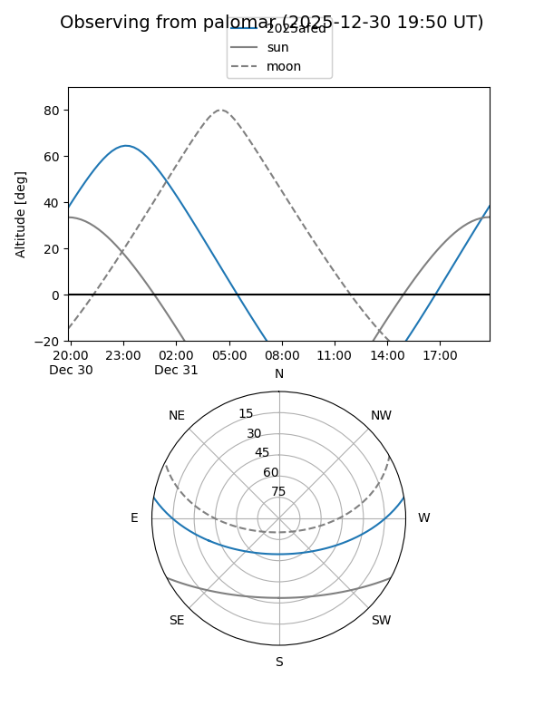
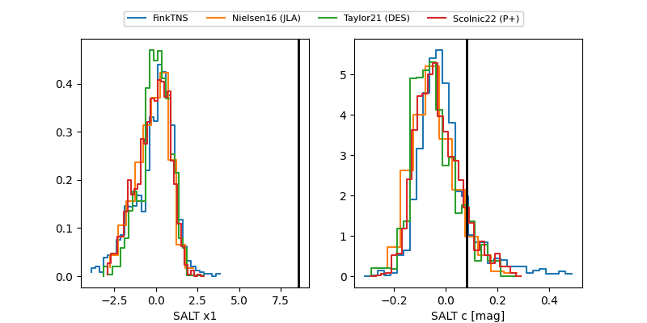

2025afed
Target 2025afed at 2025-12-31 16:59
Aliases and brokers:
FINK:
Lasair:
ALeRCE:
TNS:
YSE:
alt names
ZTF25acfgqts (ztf,fink_ztf)
2025afed (tns,yse)
Coordinates:
equatorial (ra, dec) = 329.6738,+7.81184
equatorial (HMS+DMS) = 21:58:41.72,+07:48:42.62
galactic (l, b) = (66.5253,-35.51572)
Flags:
Photometry:
last ztfg=19.60, ztfr=19.41
4 ztfg, 6 ztfr detections
Lightcurve

Visibility


Additional plots
